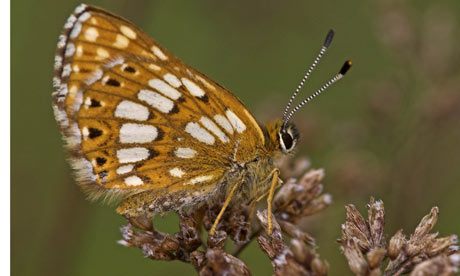

Use low-emission forms of transport
The way you choose to travel significantly effects your impact on climate change. On average each us in the UK pours 3.3 tonnes of carbon dioxide into the atmosphere each year from our personal car usage and a further 1.3 tonnes from our aircraft flights. It's unlikely to be practical for us to give up our cars and stop flying altogether, but we can make a significant difference by thinking about the choices we make and weighing up other options for how we get around.
Cut down on unnecessary flights
Air travel is a huge and growing contributor to climate change. Do you really need to fly? Are you really needed at that meeting? Is it possible to go via train instead?
Use public transport whenever possible
Using buses, trains and tubes avoids the need to drive and significantly reduces your impact on climate change. Before driving always check to see if your journey is possible another way.
Consider walking or cycling instead of driving
You don't always need to drive, especially for those short-distance journeys. Why not walk or cycle for a change? You'll be avoiding contibuting to climate change as well as getting fresh air and exercise.
Consider a holiday closer to home
What about a holiday in the UK instead of abroad? You could save 10% of your annual carbon emissions. Alternatively what about taking one long holiday rather than two to halve the number of flights?
Use low-carbon vehicle services
When leasing or renting a car or ordering a taxi you can reduce your emissions by choosing a service which provides low-carbon vehicles (see below for details).